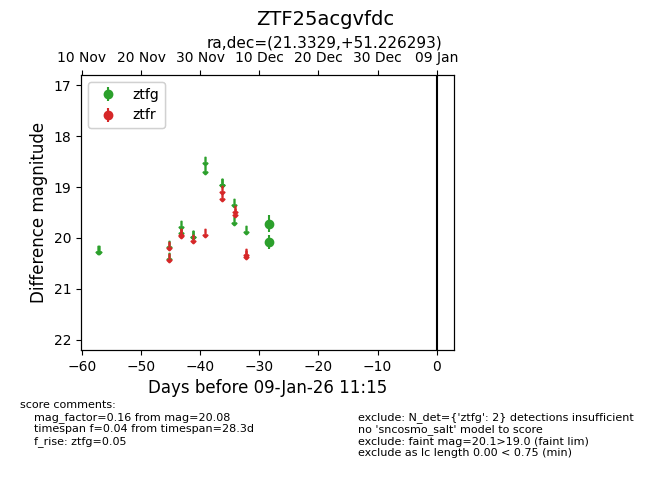
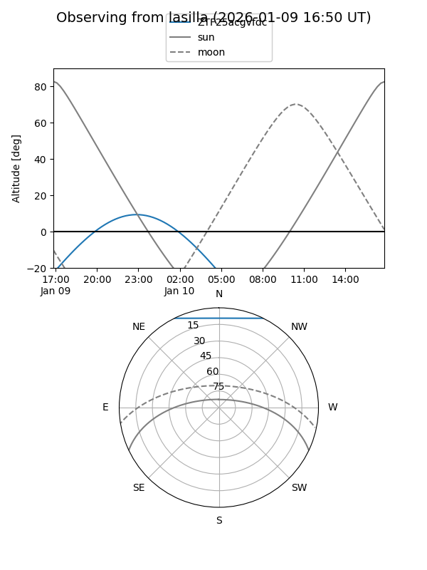
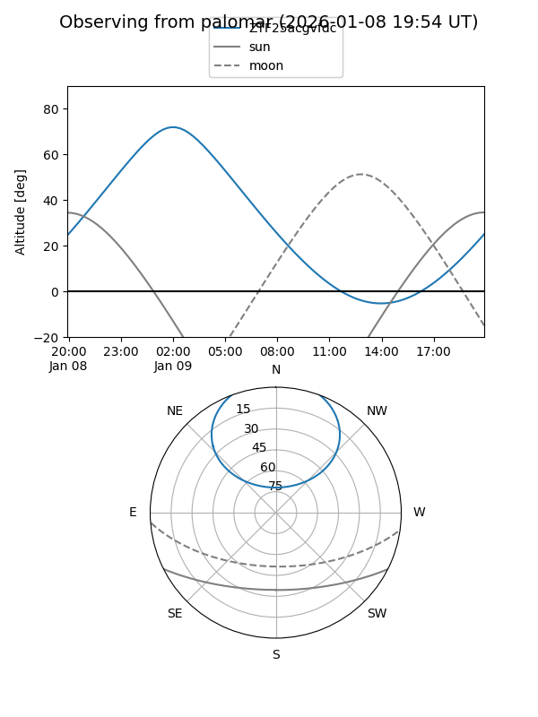

ZTF25acgvfdc
Target ZTF25acgvfdc at 2026-01-09 12:49
Aliases and brokers:
FINK: link
Lasair: link
ALeRCE: link
alt names
ZTF25acgvfdc (ztf,fink_ztf)
Coordinates:
equatorial (ra, dec) = 21.3329,+51.22629
equatorial (HMS+DMS) = 01:25:19.90,+51:13:34.65
galactic (l, b) = (128.3314,-11.28977)
Flags:
Photometry:
last ztfg=20.08
2 ztfg detections
Lightcurve

Visibility


Additional plots